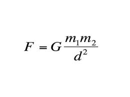
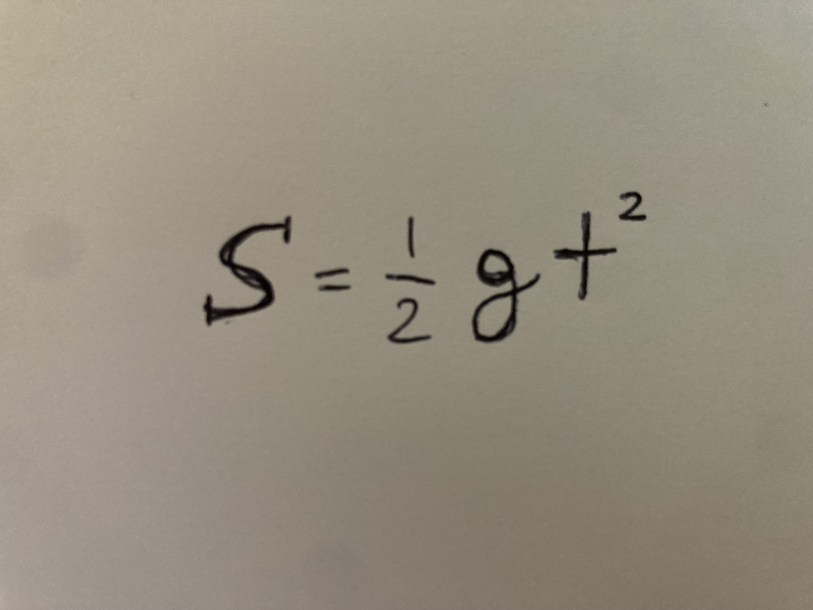

La "legge dei gravi" fu formulata da Isaac Newton nel 1687 e afferma che ogni corpo nell'universo attrae ogni altro corpo con una forza direttamente proporzionale al prodotto delle loro masse e inversamente proporzionale al quadrato della distanza che li separa.

Galileo Galilei(1564–1642) fu uno dei primi a studiare sistematicamente il moto dei corpi in caduta. Le sue osservazioni portarono a risultati rivoluzionari:

La legge di Newton fu valida per oltre due secoli, fino all’avvento della teoria della relatività generale di Albert Einstein nel 1915. Einstein dimostrò che la gravità non è una forza "a distanza" nel senso classico, ma una curvatura dello spazio-tempo causata dalla massa. Tuttavia, la legge di Newton resta perfettamente valida per la maggior parte delle applicazioni quotidiane (ingegneria, orbite satellitari, etc.).